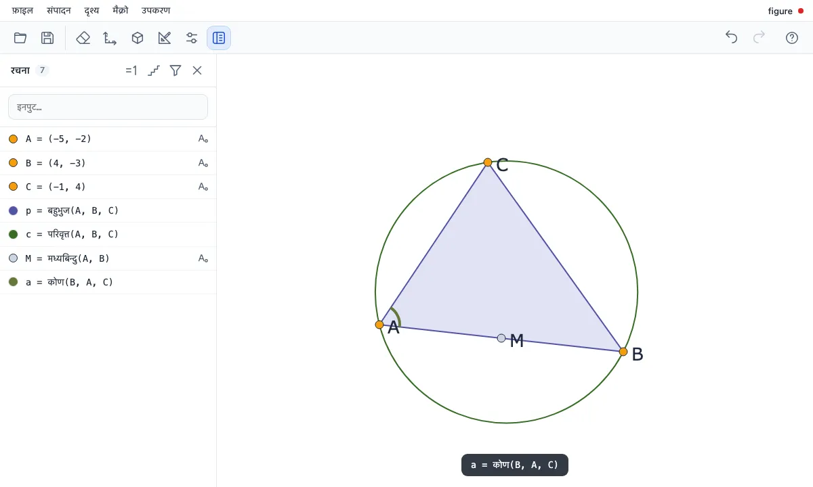
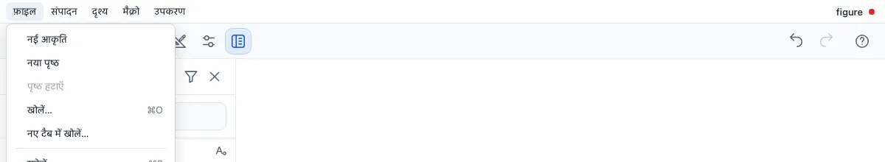

इंटरफ़ेस

मेनू बार

| मेनू | आदेश |
|---|---|
| फ़ाइल | नई आकृति, खोलें… (Ctrl O), सहेजें (Ctrl S), इस रूप में सहेजें… (Ctrl Shift S), वेब पेज में एम्बेड करें… |
| संपादन | पूर्ववत करें, फिर से करें, हटाएँ, रबड़ |
| दृश्य | अक्ष, 3D दृश्य, रचना का इतिहास, टूल पैलेट, गुण, पूर्ण स्क्रीन (बाहर निकलने के लिए Esc): सही का निशान बताता है कि क्या दिखाया जा रहा है |
| उपकरण | उपयोगकर्ता मार्गदर्शिका, DocTools, लाइसेंस और GitHub, परिचय… |
दाईं ओर आकृति की फ़ाइल का नाम, Chrome और Edge में (सहेजना)। जब DocGeo किसी दूसरे पेज में एम्बेड हो, जैसे DocTools, तब मेनू बार नहीं दिखता।
क्रिया बार
| बटन | भूमिका | |
|---|---|---|
| खोलें |
.dgo, .dgp,
.ggb
|
|
| सहेजें | .dgo में |
|
| रबड़ | ऑब्जेक्ट छिपाना या दिखाना (रबड़) | |
| अक्ष | अक्ष और ग्रिड; 3D में त्रिफलकी और फ़र्श | |
| 3D दृश्य | त्रिविम में जाना या समतल पर लौटना (3D) | |
| टूल पैलेट | टूलों का दायाँ पैनल (पैलेट) | |
| गुण | दायाँ पैनल (गुण) | |
| रचना | बायाँ पैनल | |
| पूर्ववत करें, फिर से करें | Ctrl Z, Ctrl Shift Z या Ctrl Y | |
| उपयोगकर्ता मार्गदर्शिका | पुस्तिका को DocGeo की भाषा में नए टैब में खोलता है |
बीच में, संदर्भ क्षेत्र चयनित ऑब्जेक्ट का नाम और उसकी क्रियाएँ दिखाता है।
«रचना» पैनल
-
हर ऑब्जेक्ट के लिए एक पंक्ति, रचना के क्रम में:
M = मध्यबिन्दु(A, B)। हर पंक्ति बदली जा सकती है (पुनर्परिभाषा)। - पंक्ति की शुरुआत का रंगीन बिन्दु ऑब्जेक्ट को छिपाता या दिखाता है; पंक्ति के अंत में उसका नाम दिखाता है।
- गुणों में उसकी परिभाषा खोलता है।
- किसी भी पंक्ति पर पॉइंटर ले जाने पर दिखाई देता है, जिससे वस्तु और उस पर निर्भर वस्तुएँ हटाई जा सकती हैं। इस क्रिया को पूर्ववत किया जा सकता है।
- शीर्ष भाग: ऑब्जेक्टों की संख्या, मान, चरण-दर-चरण, नया प्रोग्राम।
- «इनपुट…» इनपुट पंक्ति और टूल मेनू का बटन।
- किसी पंक्ति पर पॉइंटर ले जाने से ऑब्जेक्ट चमकता है, और इसका उल्टा भी।
संकेत
आकृति के नीचे का बुलबुला बताता है कि क्या अपेक्षित है («एक बिंदु चुनें»), टूल कौन-सी पंक्ति लिखेगा, और त्रुटियाँ लाल रंग में। उसका ✕ चल रहे टूल को छोड़ देता है।
नेविगेशन
| क्रिया | इशारा |
|---|---|
| दृश्य खिसकाना | खाली जगह खींचें; कहीं भी दायाँ बटन |
| ज़ूम करना |
व्हील या टचपैड, पॉइंटर के चारों ओर दो उँगलियों से पिंच : दोनों उँगलियों के बीच के मध्यबिंदु के चारों ओर ज़ूम |
| 3D आकृति घुमाना | दायाँ बटन, या खाली जगह पर एक उँगली |
| परिप्रेक्ष्य, फ़र्श (3D) | P, S |
नीचे बाईं ओर का गोल बटन, जो आकृति में एनीमेशन होने पर दिखता है, उन्हें रोकता या फिर से चलाता है।
पूर्ववत करना
हर बदलाव एक ही स्टैक का एक चरण है: रचना, हटाना, खिसकाना, शैली, निर्देशांक प्रणाली की सेटिंग, 3D में जाना। दृश्य का ज़ूम, खिसकाना और घुमाना चरण नहीं हैं।
पैनल
- आकार बदलने के लिए उनका भीतरी किनारा खींचें; डबल-क्लिक डिफ़ॉल्ट चौड़ाई लौटाता है।
- 900 px से कम चौड़ाई पर एक समय में एक ही पैनल खुला रहता है; 600 px या उससे कम पर «रचना» पैनल बंद अवस्था में शुरू होता है, गुण आकृति को ढक लेते हैं, और टूल चुनने पर पैनल बंद हो जाते हैं।